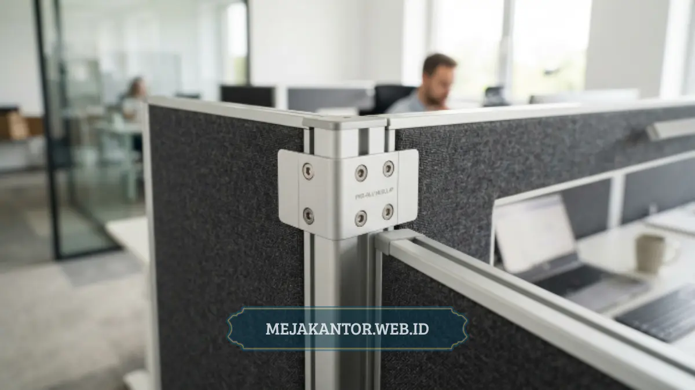

Partisi workstation PWS-06 adalah sistem meja sekat modular yang dirancang untuk mengakomodasi enam staff dalam satu formasi cluster, cocok untuk kantor dengan keterbatasan luas ruangan.
- PWS-06 mengelompokkan enam meja dalam formasi berhadapan dengan partisi tengah sebagai pembatas.
- Sistem modular memudahkan penyesuaian ulang konfigurasi tanpa mengganti seluruh unit.
- Cocok untuk tim yang membutuhkan kolaborasi cepat namun tetap ingin ada batas privasi kerja.
- Perlu perhitungan cermat terhadap luas ruangan sebelum pemasangan agar jalur sirkulasi tidak terganggu.
- Harga dan spesifikasi detail sebaiknya dikonfirmasi langsung ke vendor karena dapat bervariasi antar penyedia.
Daftar Isi Artikel
Apa Itu Partisi Workstation PWS-06?
Partisi workstation PWS-06 adalah salah satu varian meja sekat modular yang menyusun enam unit meja individu dalam satu formasi terintegrasi, biasanya dalam pola tiga berhadapan tiga dengan partisi tengah sebagai pembatas.
Konsep dasar dari model ini adalah efisiensi ruang melalui pengelompokan meja. Alih-alih menempatkan enam meja secara terpisah yang masing-masing membutuhkan jalur akses sendiri, sistem cluster pada PWS-06 memungkinkan enam staff berbagi satu jalur sirkulasi bersama di sisi luar formasi. Pendekatan ini secara signifikan mengurangi kebutuhan total luas ruangan dibandingkan penataan meja individu yang tersebar.
Setiap unit dalam formasi PWS-06 umumnya dilengkapi partisi tengah yang berfungsi sebagai pembatas visual antar staff yang duduk berhadapan. Tinggi partisi bervariasi tergantung kebutuhan, mulai dari partisi rendah untuk komunikasi terbuka hingga partisi menengah untuk kebutuhan fokus kerja yang lebih tinggi.
Bagaimana Konfigurasi PWS-06 untuk Enam Staff Sekaligus?
Konfigurasi PWS-06 umumnya disusun dalam dua baris tiga meja yang saling berhadapan, dipisahkan oleh partisi tengah memanjang, sehingga membentuk satu unit kerja kompak untuk enam orang.
Formasi ini memungkinkan setiap staff memiliki area kerja individu dengan lebar meja yang cukup untuk perangkat komputer, dokumen, dan peralatan kerja harian, tanpa harus berbagi permukaan meja dengan rekan di sebelahnya. Partisi samping antar meja yang berdekatan biasanya berukuran lebih rendah dibandingkan partisi tengah, sehingga staff yang duduk bersebelahan masih dapat berkomunikasi dengan mudah, sementara staff yang duduk berhadapan tetap memiliki batas visual yang jelas.
Sistem kabel manajemen juga menjadi bagian penting dari konfigurasi ini. Karena enam unit meja saling terhubung dalam satu formasi, jalur kabel listrik dan data biasanya dirancang menyatu di bagian tengah atau bawah meja, sehingga tidak ada kabel yang berserakan di area kaki staff. Hal ini penting terutama untuk kantor sempit di mana setiap celah ruang perlu dimanfaatkan secara maksimal tanpa risiko kabel menghalangi jalur gerak.

Apa Kelebihan Partisi Workstation PWS-06 untuk Kantor Kecil?
Kelebihan utama PWS-06 terletak pada efisiensi penggunaan luas lantai, kemudahan instalasi bertahap, dan fleksibilitas konfigurasi ulang saat jumlah staff berubah.
1. Efisiensi Luas Lantai
Dibandingkan menata enam meja terpisah dengan jarak individu masing-masing, formasi cluster PWS-06 dapat menghemat ruang gerak karena jalur sirkulasi digunakan bersama oleh seluruh anggota dalam satu formasi. Penghematan ruang ini menjadi keunggulan utama bagi kantor yang memiliki keterbatasan luas namun tetap membutuhkan jumlah staff yang cukup banyak dalam satu area.
2. Kemudahan Instalasi Bertahap
Karena bersifat modular, unit PWS-06 dapat dipasang secara bertahap sesuai kebutuhan awal, misalnya memulai dengan konfigurasi tiga staff terlebih dahulu, kemudian menambah tiga unit lagi ketika tim bertambah. Pendekatan ini membantu perusahaan kecil mengatur pengeluaran furnitur secara bertahap tanpa harus membeli seluruh set sekaligus di awal.
3. Fleksibilitas Konfigurasi Ulang
Sistem sambungan modular pada umumnya memungkinkan unit dibongkar dan disusun ulang dalam formasi berbeda, misalnya diubah dari formasi cluster enam menjadi dua cluster tiga staff, jika tata ruang kantor mengalami perubahan di kemudian hari.
Apa Kekurangan yang Perlu Diperhatikan Sebelum Membeli PWS-06?
Kekurangan yang perlu diperhatikan meliputi kebutuhan luas ruangan minimum agar jalur sirkulasi di sekitar formasi tetap nyaman, serta keterbatasan privasi kerja dibandingkan meja individu terpisah.
Meskipun hemat ruang dibandingkan penataan meja terpisah, formasi cluster tetap membutuhkan luas ruangan minimum tertentu agar staff di sisi terluar formasi memiliki jalur keluar-masuk yang layak. Jika ruangan terlalu sempit untuk formasi enam staff sekaligus, memaksakan pemasangan justru akan menciptakan jalur sirkulasi yang sangat sempit di sekitar cluster.
Dari sisi privasi, formasi berhadapan dalam satu cluster besar cenderung memberikan tingkat privasi kerja yang lebih rendah dibandingkan meja individu dengan partisi tinggi terpisah. Staff yang bekerja dengan panggilan telepon secara intensif atau membutuhkan konsentrasi tinggi mungkin merasa kurang nyaman dengan tingkat interaksi visual yang lebih tinggi dalam formasi cluster.
Faktor lain yang perlu dipertimbangkan adalah proses pemasangan awal yang membutuhkan pengukuran ruangan secara presisi. Kesalahan pengukuran dapat menyebabkan formasi tidak pas dengan sudut ruangan atau posisi kolom bangunan, sehingga sebaiknya dilakukan survei lokasi terlebih dahulu sebelum unit dipesan.
Apakah PWS-06 Cocok untuk Ruangan Berukuran Terbatas?
PWS-06 dapat cocok untuk ruangan terbatas selama luas ruangan mencukupi kebutuhan minimum formasi cluster beserta jalur sirkulasi di sekelilingnya, yang idealnya diukur langsung sebelum pemesanan.
Kecocokan model ini sangat bergantung pada denah ruangan yang tersedia. Ruangan berbentuk persegi atau persegi panjang dengan proporsi seimbang umumnya lebih mudah mengakomodasi formasi cluster enam staff dibandingkan ruangan memanjang sempit yang justru lebih cocok untuk layout berbaris. Sebelum memutuskan membeli PWS-06, sebaiknya dilakukan pengukuran detail terhadap panjang, lebar, serta posisi pintu, jendela, dan kolom struktural dalam ruangan.
Selain ukuran ruangan, jumlah staff yang direncanakan juga perlu dipertimbangkan matang-matang. Jika kebutuhan saat ini hanya untuk tiga hingga empat staff namun berpotensi bertambah, memilih konfigurasi modular yang dapat diperluas secara bertahap akan lebih menguntungkan dibandingkan langsung memesan unit penuh untuk enam staff sejak awal.
Partisi workstation PWS-06 menawarkan solusi efisiensi ruang bagi kantor kecil yang membutuhkan enam titik kerja dalam satu formasi kompak. Kelebihan utamanya terletak pada penghematan luas lantai dan fleksibilitas instalasi bertahap, namun tetap perlu diperhatikan kebutuhan luas ruangan minimum dan tingkat privasi kerja yang lebih rendah dibandingkan meja individu terpisah. Pengukuran ruangan secara presisi sebelum pemesanan menjadi langkah penting agar formasi ini benar-benar sesuai dengan kondisi kantor yang ada.
Tertarik dengan Partisi Workstation PWS-06?
Dapatkan penawaran harga terbaik, pilihan material custom, dan simulasi penataan ruang kantor Anda dari tim konsultan kami.
Konsultasi via WhatsApp 0889-8964-3555
Mega Anggun
Penulis Konten & Spesialis Penataan Interior Kantor. Berpengalaman dalam memberikan tips ergonomi dan memilih furnitur terbaik untuk menunjang produktivitas kerja.